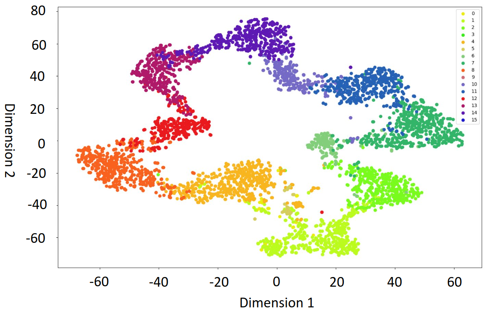
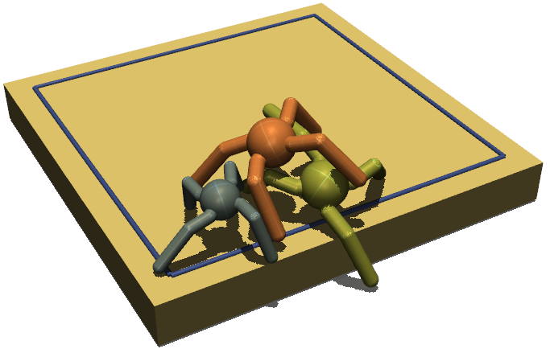
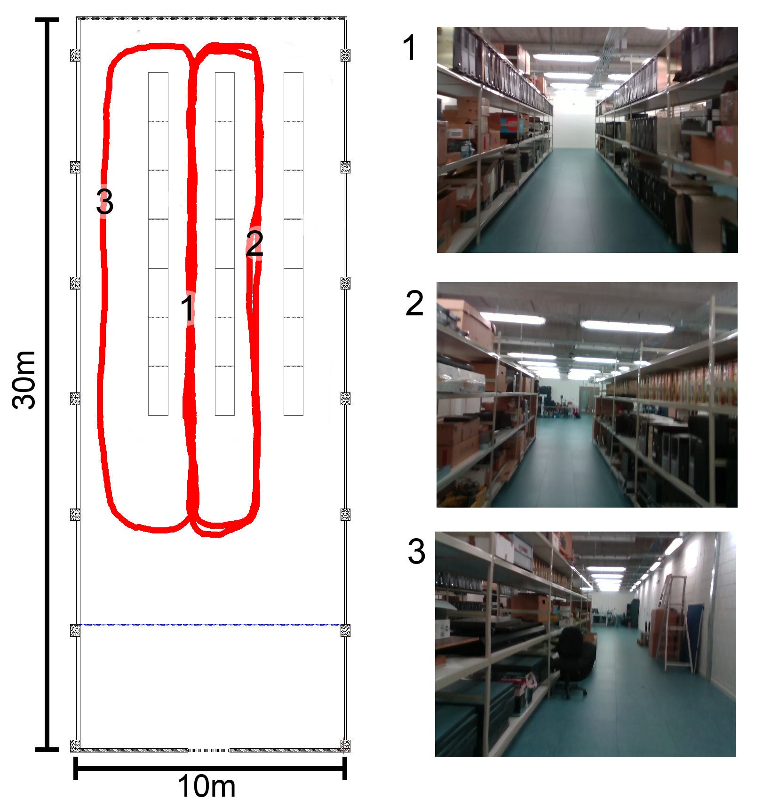
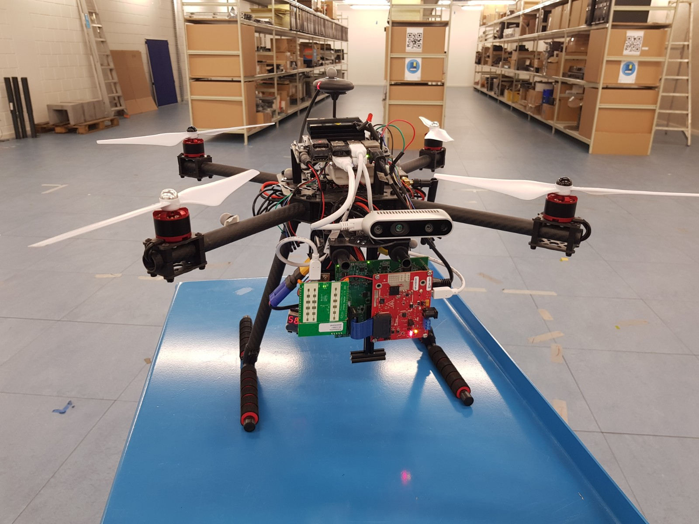

N. W.
List of Publications

'Hybrid guided variational auto-encoder for visual scene recognition'
Ni Wang, Emre Neftci, Thorben Schoepe. submitted to IROS2025

'Learning cooperative behaviours in adversarial multi-agent systems'
Ni Wang, Gautham Das, Alan Millard. In: TAROS 2022.
Lecture Notes
in Computer Science(), vol 13546. Springer, Cham.

'Bio-inspired unsupervised representation learning framework for aerial navigation in unknown evnironment'
Ni Wang, Ozan Çatal, Tim Verbelen, Matthias Hartmann, Bart Dhoedt. ICRA 2021 Aerial Robotics Workshop

'Bio-inspired monocular drone SLAM'
O. Çatal, T. Verbelen, Ni Wang, et al. in
DroneSE and RAPIDO: System Engineering for constrained embedded systems
ACM, 2022, page 21–26, New York, USA.